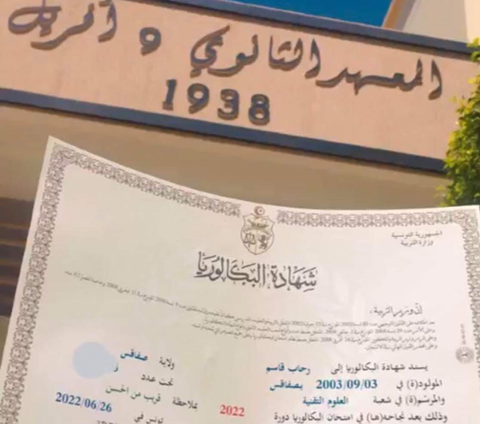
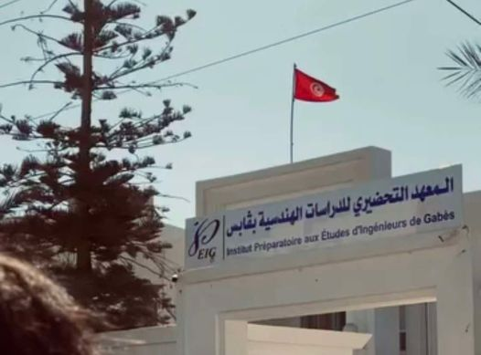
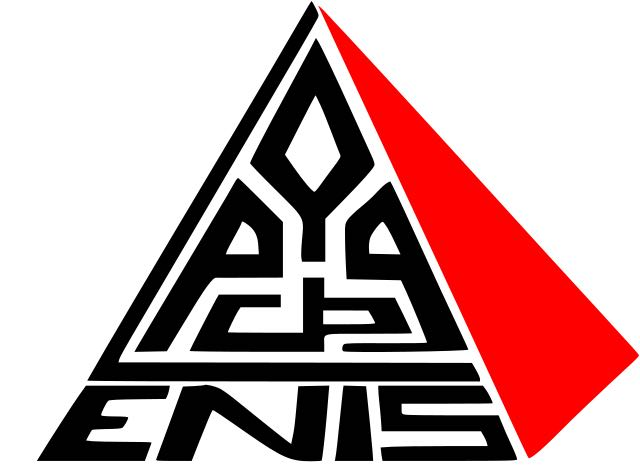

2022
J'ai obtenu la mention Assez Bien au baccalauréat technique, ce qui reflète une réussite solide au lycée 9 avril 1938 sfax.

2023
J'ai effectué mes études à l'Institut Préparatoire de Gabès en 2023, où j'ai suivi une spécialité Physique-Technique.

2024
J'ai été admis au concours national et affecté à l'École Nationale d'Études d'Ingénieurs de Sfax (ENIS), où je poursuis désormais ma formation d'ingénieur en spécialité génie civil.

2025
J'ai décidé de commencer mes études à l'IIT en cycle Génie Informatique, un choix motivé par mon intérêt croissant pour les technologies et l'innovation.